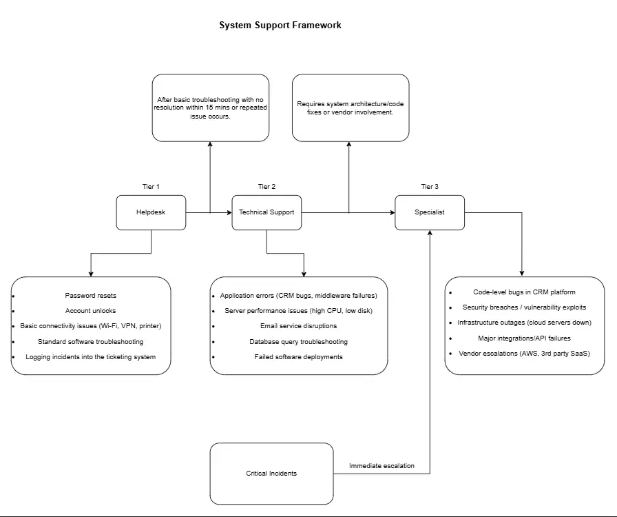

Company: TechFlow Solutions
Prepared by: Mutondi Tshivhase
TechFlow Solutions is preparing to launch a cloud-based CRM platform for small-to-medium marketing agencies. The company needs a structured IT support framework for internal employees and future customers. The assessment pack provides deliverables including system support framework, incident logging, monitoring checklist, knowledge base articles, and success metrics.
Escalation Model:
Handoff Criteria: Tier 1 → Tier 2 if unresolved, Tier 2 → Tier 3 if unresolved. Critical incidents bypass Tier 1/2 and go directly to Tier 3.
| Impact \ Urgency | High (Immediate) | Medium (Next 24h) | Low (Next 3–5 days) |
|---|---|---|---|
| Critical | CRM platform down for all users | Email delayed for 50% staff | Shared drive slow |
| High | VPN outage for remote office | CRM bug affecting 1 client | Printer offline |
| Medium | Password reset for CEO | Software install request | Slow PC |
| Low | Desktop wallpaper change | Mouse replacement request | Training question |
| # | Check | Threshold / Trigger |
|---|---|---|
| 1 | CPU Usage | >80% for 5 min |
| 2 | Memory Usage | >85% |
| 3 | Disk Space | <20% free |
| 4 | Network Latency | >150ms |
| 5 | VPN Gateway Uptime | <99% |
| 6 | CRM Service Uptime | <99.5% |
| 7 | Database Replication Lag | >5s |
| 8 | Failed Login Attempts | >10/min |
| 9 | Firewall / IDS Alerts | Any trigger |
| 10 | SSL Certificate Expiry | <14 days |
| 11 | Backup Job Failures | Any failure |
| 12 | Server Patch Compliance | <95% |
| 13 | Email Queue Backlog | >500 messages |
| 14 | Cloud Billing Anomaly | >20% spike |
| 15 | API Response Time | >2s |
Prepared by:
Mutondi Tshivhase
Email: Tmutondi@gmail.com
Phone: 076 256 6312